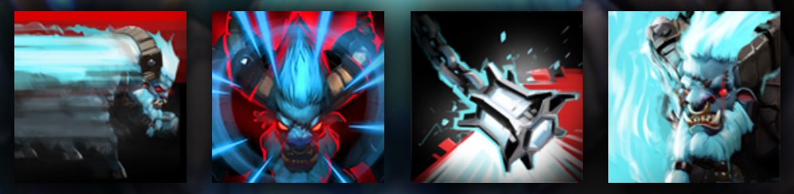

SPIRIT BREAKER
CHARGES DOWN ENEMIES FROM ANYWHERE ON THE MAP
HISTORY
Barathrum the Spirit Breaker is a lordly and powerful being, a fierce and elemental intelligence which chose to plane-shift into the world of matter to take part in events with repercussions in the elemental realm that is his home. To that end, he assembled a form that would serve him well, both in our world and out of it. His physical form borrows from the strengths of this world, blending features both bovine and simian--horns, hooves and hands--as outward emblems of his inner qualities of strength, speed and cunning. He wears a ring in his nose, as a reminder that he serves a hidden master, and that this world in which he works is but a shadow of the real one.
ABILITIES
PAIRD WELL WITH
PUDGE
CRYSTAL
JAKIRO